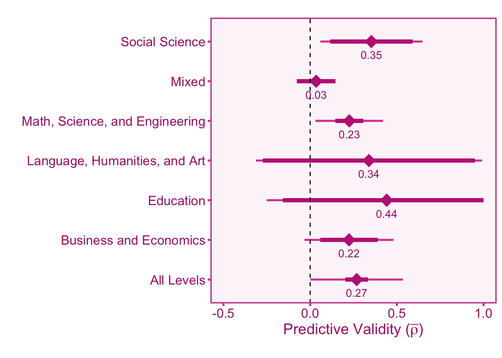
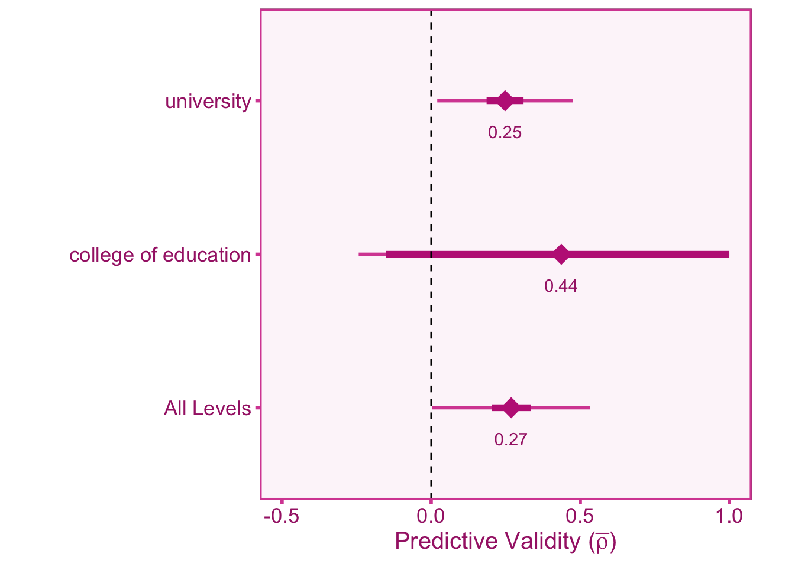

| # of Academic Years \((\kappa)\) | Estimated Reliability \((r_{YY'})\) |
|---|---|
| 1 | 0.738 |
| 2 | 0.849 |
| 3 | 0.894 |
| 4 | 0.918 |
| 5 | 0.934 |
Predictive Validity of the Unified Tertiary Matriculation Examination on University Grades
A Validity Generalization Meta-Analysis
The Unified Tertiary Matriculation Examination (UTME) is a standardized test used for university admissions decisions in Nigeria. The examination is administered by the Joint Admissions and Matriculation Board (JAMB). The validity of the UTME in predicting academic performance has been investigated extensively in the literature, therefore this meta-analysis aims to synthesize the current validity evidence. This open-source web-page consists of the results, methodology, and data for a real-time updating meta-analytic database.
Current Results
Study Selection
Imputing Missing Reliability
The average inter-correlation between each year-end GPA (\(\bar{r}_{y_iy_j}\); see Methods) and the number of years that the students attend college, \(\kappa\), can be used to estimate the reliability of final cumulative GPA (CGPA) during their time in college. For example, a CGPA calculated from all four years of college is more reliable than a CGPA computed from just their first year in college. Since inter-grade correlations are rarely reported in primary studies, we can take the \(N\)-weighted average of available inter-grade correlations to fill in missing values. We then use the number of years of university the study computes the CGPA from and use those values to estimate the reliability of CGPA in the given study.
Estimated Reliability
Full Meta-Analysis
The full meta-analysis of all studies is reported below with an uncorrected (i.e., bare bones) and corrected version.
Bare Bones Model (No Correction)
| \(k\) | \(N\) | \(\bar{r}\) | \(CI_{L95}\) | \(CI_{U95}\) | \(SD_r\) | \(CR_{L90}\) | \(CR_{U90}\) |
|---|---|---|---|---|---|---|---|
| 31 | 10675 | 0.227 | 0.169 | 0.285 | 0.157 | -0.008 | 0.461 |
Artifact Correction Model
| \(k\) | \(N\) | \(\hat{\bar{\rho}}\) | \(CI_{L95}\) | \(CI_{U95}\) | \(SD_\rho\) | \(CR_{L90}\) | \(CR_{U90}\) |
|---|---|---|---|---|---|---|---|
| 31 | 10675 | 0.268 | 0.203 | 0.334 | 0.156 | 0.003 | 0.533 |
Moderators
Disciplines
College disciplines/majors are broken down into broad categories.

| Computer Based | \(k\) | \(N\) | \(\hat{\bar{\rho}}\) | \(CI_{L95}\) | \(CI_{U95}\) | \(SD_\rho\) | \(CR_{L90}\) | \(CR_{U90}\) |
|---|---|---|---|---|---|---|---|---|
| All Levels | 31 | 10675 | 0.268 | 0.203 | 0.334 | 0.157 | 0.002 | 0.535 |
| Business and Economics | 5 | 2997 | 0.224 | 0.059 | 0.389 | 0.120 | -0.033 | 0.481 |
| Education | 3 | 1314 | 0.441 | -0.158 | 1.000 | 0.237 | -0.251 | 1.000 |
| Language, Humanities, and Art | 3 | 604 | 0.339 | -0.273 | 0.951 | 0.223 | -0.313 | 0.991 |
| Math, Science, and Engineering | 15 | 4319 | 0.226 | 0.145 | 0.307 | 0.111 | 0.031 | 0.421 |
| Mixed | 1 | 438 | 0.035 | -0.077 | 0.146 | NA | NA | NA |
| Social Science | 4 | 1003 | 0.353 | 0.115 | 0.591 | 0.125 | 0.059 | 0.647 |
Type of Institution
Whether the institution is a university, polytechnic, or college of education.

| Institution Type | \(k\) | \(N\) | \(\hat{\bar{\rho}}\) | \(CI_{L95}\) | \(CI_{U95}\) | \(SD_\rho\) | \(CR_{L90}\) | \(CR_{U90}\) |
|---|---|---|---|---|---|---|---|---|
| All Levels | 31 | 10675 | 0.268 | 0.203 | 0.334 | 0.156 | 0.004 | 0.533 |
| college of education | 3 | 1314 | 0.436 | -0.152 | 1.000 | 0.233 | -0.243 | 1.000 |
| university | 28 | 9361 | 0.248 | 0.186 | 0.310 | 0.134 | 0.020 | 0.475 |